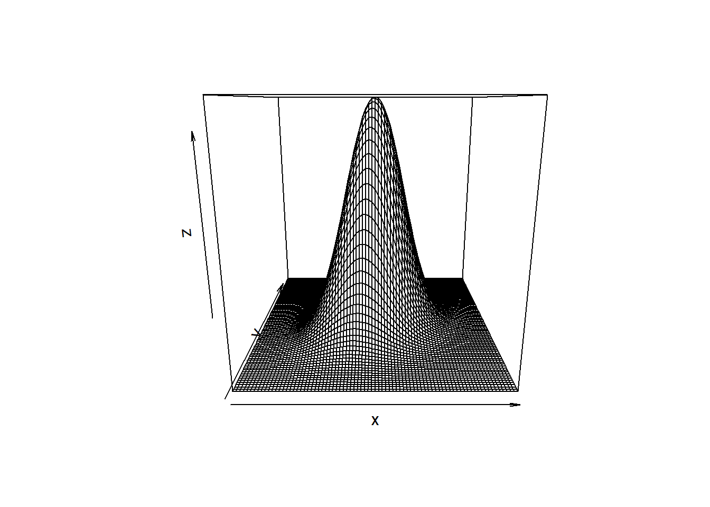
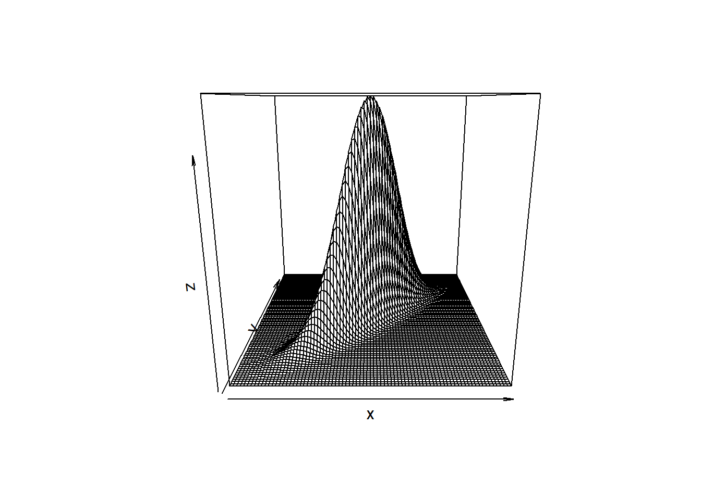
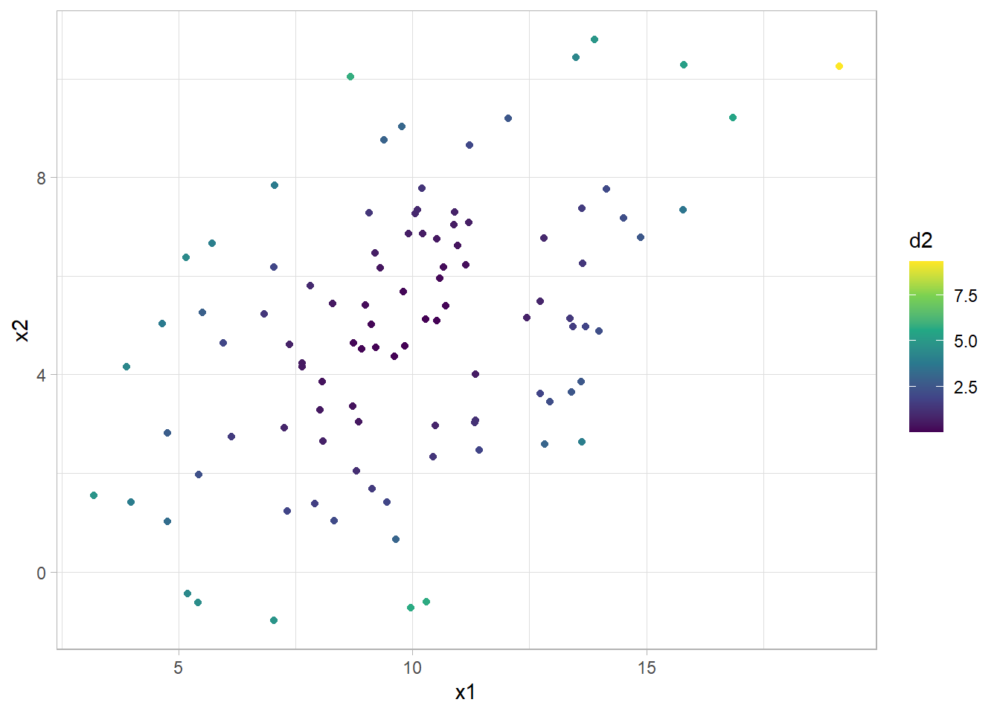
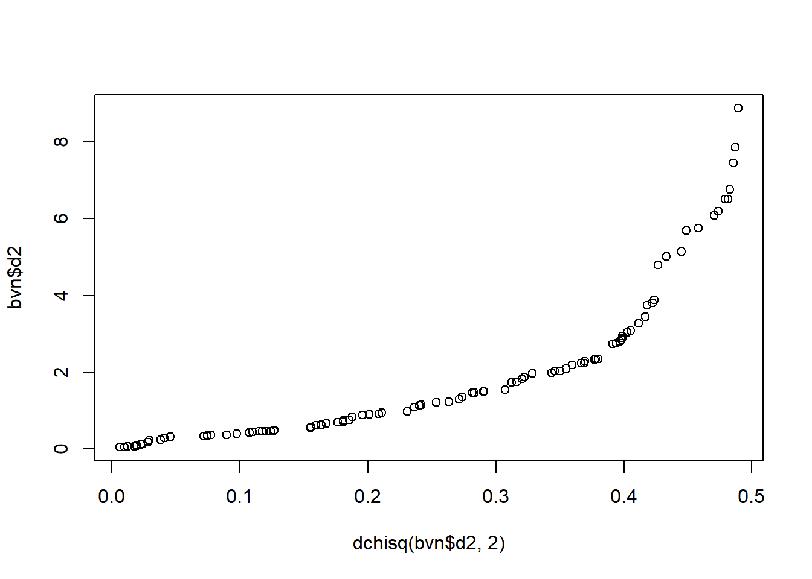
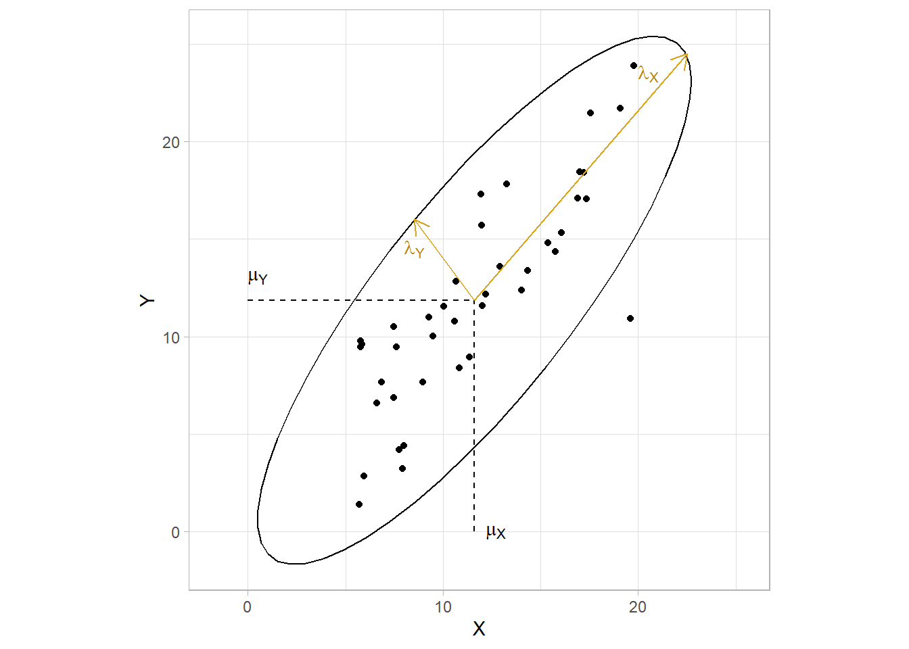

nutrient <- readr::read_fwf(
file = "./input/nutrient.txt",
col_positions = readr::fwf_widths(
c(3, 8, 8, 8, 8, 8),
col_names = c("ID", "Calcium", "Iron", "Protien", "Vitamin A", "Vitamin C")
),
show_col_types = FALSE
) 12 Matrix Algebra
This section is a primer on basic matrix algebra and its application to multivariate statistics.1
An initial remark on these notes: Matrix algebra treats data transposed to how it is actually stored. An \(n\)-row \(\times\) \(p\)-column data set is represented in matrix \(X\) as \(n\) columns and \(p\) rows. Think of \(X\) as a column vector of variables with each variable represented by a row vector of observations.
\[ X_i = \begin{pmatrix}X_{i1} \\ X_{i2} \\ \vdots \\ X_{ip} \end{pmatrix} \]
So \(X_{ij}\) refers to index \(i\) of row vector \(j\), opposite of how the data frame is organized. Observation \(i\) is represented as \(X_i\), but it is a column vector of the matrix.
12.1 Central Tendancy, Dispersion, and Association
The mean of variable \(j\) is the average of row vector \(X_j\), \(\bar{x}_j = \frac{1}{n} \sum_{i = 1}^n X_{ij}\). \(\bar{x}_j\) estimates the population mean, \(\mu_j = E(X_j)\). The collection of means are a column vector.
\[\boldsymbol{\mu} = \begin{pmatrix} \mu_1 \\ \mu_2 \\ \cdots \\ \mu_p \end{pmatrix}\]
The variance of variable \(j\) is the average squared difference from the mean for row vector \(X_j\), \(s_j^2 = \frac{1}{n-1} \sum_{i=1}^n (X_{ij} - \bar{x}_j)^2\). It estimates the population variance, \(\sigma_j^2 = E(X_j - \mu_j)^2\). Again, the collection is represented as a column vector,
\[\boldsymbol{\sigma}^2 = \begin{pmatrix} \sigma_1^2 \\ \sigma_2^2 \\ \cdots \\ \sigma_p^2 \end{pmatrix}\]
The covariance of variables \(j\) and \(k\) is the average product of differences from their respective means, \(s_{jk} = \frac{1}{n-1} \sum_{i=1}^n (X_{ij} - \bar{x}_j) (X_{ik} - \bar{x}_k)\). It estimates the population covariance, \(\sigma_{jk} = E\{ (X_{ij} - \mu_j) (X_{ik} - \mu_k)\}\). Notice how the covariance is positive if when one variable is larger than its mean, so is the other. A zero covariance implies the value of one variable tells you nothing about the other. It can be shown that the covariance is equivalently expressed as
\[ s_{jk} = \frac{1}{n-1} \left[ \sum_{i=1}^n X_{ij}X_{ik} - \frac{\sum_{i = 1}^n X_{ij} \sum_{i = 1}^n X_{ik}}{n} \right] \]
This is how it is actually calculated (see example below). The first term is dot product \(X_j \cdot X_k\). The second term is the product of the averages. The generalization across the entire matrix is the variance-covariance matrix.
\[ \begin{align} S &= \frac{1}{n-1} \sum_{i=1}^n (X_i - \bar{x}) (X_i - \bar{x})' \\ &= \frac{1}{n-1} \left[ \sum_{i=1}^n X_i X_i^{'} - \frac{\sum_{i = 1}^n X_i \sum_{i = 1}^n X_i}{n} \right] \end{align} \]
Divide the covariance of two variables by the product of their standard deviations to get the correlation.
\[ \rho_{jk} = \frac{\sigma_{jk}}{\sigma_j \sigma_k} \]
The sum of the diagonal of any square matrix is called the trace. The trace of the covariance matrix is a single number that expresses the total dispersion of the data set.
\[\mathrm{Trace}(S) = \sum_p S_{pp}\]
The trace has the shortcoming of not taking the variable correlations into account. A data set can have a large trace, but really high correlations. Instead, the generalized variance expresses total variation with the determinant.
\[|S| = \sum_{j = 1}^p (-1)^{j+1} b_{1j} |B_{1j}|\]
Example
File nutrient.txt is from PSU STAT 505.
This is an 737 \(\times\) 5 data set.
(nutrient_smry <- nutrient %>% pivot_longer(cols = -ID) %>%
summarize(M = mean(value), SD = sd(value), .by = name))# A tibble: 5 × 3
name M SD
<chr> <dbl> <dbl>
1 Calcium 624. 397.
2 Iron 11.1 5.98
3 Protien 65.8 30.6
4 Vitamin A 840. 1634.
5 Vitamin C 78.9 73.6 Calculate the variance-covariance matrix with matrix algebra. Notice the transpose step, t(), to convert the \(i \times j\) data set into the \(j \times i\) matrix .
X <- nutrient %>% select(-ID) %>% as.matrix() %>% t()
varcov_mtrx <- 1 / (nrow(nutrient) - 1) *
(X %*% t(X) - rowSums(X) %*% t(rowSums(X)) / nrow(nutrient))
round(varcov_mtrx, 0) Calcium Iron Protien Vitamin A Vitamin C
Calcium 157829 940 6076 102411 6702
Iron 940 36 114 2383 138
Protien 6076 114 935 7330 477
Vitamin A 102411 2383 7330 2668452 22063
Vitamin C 6702 138 477 22063 5416Divide by the product of the standard deviations to get the correlation matrix.
sd_prd <- nutrient_smry$SD %*% t(nutrient_smry$SD)
corr_mtrx <- varcov_mtrx / sd_prd
round(corr_mtrx, 3) Calcium Iron Protien Vitamin A Vitamin C
Calcium 1.000 0.395 0.500 0.158 0.229
Iron 0.395 1.000 0.623 0.244 0.313
Protien 0.500 0.623 1.000 0.147 0.212
Vitamin A 0.158 0.244 0.147 1.000 0.184
Vitamin C 0.229 0.313 0.212 0.184 1.000That’s what cor() does.
nutrient %>% select(-ID) %>% cor() %>% round(digits = 3) Calcium Iron Protien Vitamin A Vitamin C
Calcium 1.000 0.395 0.500 0.158 0.229
Iron 0.395 1.000 0.623 0.244 0.313
Protien 0.500 0.623 1.000 0.147 0.212
Vitamin A 0.158 0.244 0.147 1.000 0.184
Vitamin C 0.229 0.313 0.212 0.184 1.000The coefficient of determination is the square of the correlation coefficient. Interpret cell (1, 2) below as 15.6% of the variation in iron is explained by calcium intake, or vice-versa.
r_sqr_mtrx <- corr_mtrx^2
round(r_sqr_mtrx, 3) Calcium Iron Protien Vitamin A Vitamin C
Calcium 1.000 0.156 0.250 0.025 0.053
Iron 0.156 1.000 0.389 0.059 0.098
Protien 0.250 0.389 1.000 0.022 0.045
Vitamin A 0.025 0.059 0.022 1.000 0.034
Vitamin C 0.053 0.098 0.045 0.034 1.000The total variation of the nutrient data set is the trace of the covariance-variance matrix.
psych::tr(varcov_mtrx)
## [1] 2832669
# Or just the sum of the variances
sum((nutrient_smry$SD)^2)
## [1] 2832669The generalized variance is the determinant.
det(varcov_mtrx)[1] 2.831042e+1912.2 Linear Transformations
Linear combinations can be expressed as the multiplication of a matrix by the transpose of a column vector, \(\textbf{Y} = \textbf{c}^{'} \textbf{X}\). A trivial example can be taken from the nutrient.txt example data from the prior section. Vitamin A is measured in micrograms and vitamin C is measured in milligrams. The total intake in milligrams is measured by the transformation, \(\textbf{Y} = .001 X_4 + X_5\).
The mean of linear combination is the linear combination of the means, \(\bar{\textbf{y}} = \textbf{c}'\bar{x}\). \(\bar{\textbf{y}}\) estimates the population mean, \(\textbf{c}'\mathbf{\mu} = E(\textbf{Y})\).
\(\text{Var}(Y) = \textbf{c}' \mathbf{\Sigma} \textbf{c}\) where \(\mathbf{\Sigma}\) is the variance-covariance matrix.
Suppose you have two linear transformations, \(\textbf{Y}_1 = \textbf{c}^{'} \textbf{X}\) and \(\textbf{Y}_1 = \textbf{d}^{'} \textbf{X}\). Their covariance, \(\sigma_{Y_1 Y_2}\), is \(\text{Cov}(Y_1, Y_2) = \textbf{c}' \mathbf{\Sigma} \textbf{d}\). Their correlation is their covariance divided by the individual standard deviations, \(\rho = \frac{\sigma_{Y_1 Y_2}}{\sigma_{Y_1}\sigma_{Y_2}}\).
Example
Using file nutrient.txt from the prior section, if \(Y = .001 X_4 + X5\), then the mean of \(Y\) is 79.8.
C <- c(0, 0, 0, .001, 1)
x_bar <- nutrient_smry$M
# Mean
t(C) %*% x_bar
## [,1]
## [1,] 79.76808
# Variance
(VarY1 <- t(C) %*% varcov_mtrx %*% C)
## [,1]
## [1,] 5463.059
# Covariance between Y1 = cX and Y2 = dX
d <- c(1, 1, 0, 0, 0)
(CovY1Y2 <- t(C) %*% varcov_mtrx %*% d)
## [,1]
## [1,] 6944.082
# Correlation
VarY2 <- t(d) %*% varcov_mtrx %*% d
(CorY1Y2 <- CovY1Y2 / sqrt(VarY1 * VarY2))
## [,1]
## [1,] 0.235062112.3 Multivariate Normal Distribution
The univariate normal distribution, \(X \sim N(\mu, \sigma^2)\), is a function of the variable’s mean and variance, \(\phi(x) = \frac{1}{\sqrt{2 \pi \sigma^2}}\exp\{-\frac{1}{2\sigma^2} (x - \mu)^2\}\). The multivariate normal distribution is similar except that the mean is the mean vector and the variance is the variance-covariance matrix, \(\textbf{X} \sim N(\mu, \Sigma)\). Notice the determinant \(|\Sigma|\) and matrix inverse in the equation.
\[ \begin{equation} \phi(\textbf{X}) = \left(\frac{1}{2 \pi}\right)^{p/2}|\Sigma|^{-1/2}\exp\{-\frac{1}{2} (\textbf{x} - \mathbf{\mu})'\Sigma^{-1}(\textbf{x} - \mathbf{\mu})\} \end{equation} (\#eq:multivariate-normal) \]
If \(p\) is 2, then you have a bi-variate normal distribution. The exponentiated term \((\textbf{x} - \mathbf{\mu})'\Sigma^{-1}(\textbf{x} - \mathbf{\mu})\) is called the squared Mahalanobis distance between \(x\) and \(\mu\).
A linear transformation is distributed \(\textbf{Y} \sim N(\textbf{c}'\mu, \textbf{c}'\Sigma \textbf{c})\). It’s useful to note that each variable in the multivariate normal distribution is normal, as are subsets of variables, linear combinations, and conditional distributions.
For an intuitive understanding of the material, consider the bivariate case.
\[ \begin{pmatrix}X_1 \\ X_2 \end{pmatrix} \sim N \left[ \begin{pmatrix} \mu_1 \\ \mu_2 \end{pmatrix} \begin{pmatrix} \sigma_1^2 & \rho \sigma_1 \sigma_2 \\ \rho \sigma_1 \sigma_2 & \sigma_2^2 \end{pmatrix}\right] \]
If \(\rho\) is 0, then the bivariate normal density function is symmetric in all dimension. As \(\rho \rightarrow 1\), the curve gets increasing skinny along the diagonal.
x <- seq(-4, 4, .1)
y <- seq(-4, 4, .1)
z_values <- function(x, y, r = .8) {
exp(-(x^2-2*r*x*y+y^2)/2/(1-r^2))/2/pi/sqrt(1-r^2)
}# correlation is .3
z <- outer(x, y, z_values, .3)
persp(x, y, z)
# correlation is .9
z <- outer(x, y, z_values, .9)
persp(x, y, z)
The squared Mahalanobis distance, \(d^2 = (\textbf{x} - \mathbf{\mu})'\Sigma^{-1}(\textbf{x} - \mathbf{\mu})\), is the equation for a hyper-ellipse centered at \(\mu\). In two dimensions, it looks like this:
bvn_mtrx <- MASS::mvrnorm(
n = 100,
mu = c(10, 5),
Sigma = matrix(c(10, 5, 2, 9), ncol = 2)
)
colnames(bvn_mtrx) <- c("x1", "x2")
d2 <- mahalanobis(bvn_mtrx, colMeans(bvn_mtrx), cov(bvn_mtrx))
bvn <- as_tibble(bvn_mtrx) %>% bind_cols(d2 = d2)
bvn %>% ggplot(aes(x = x1, y = x2, color = d2)) +
geom_point() +
scale_color_continuous(type = "viridis")
\(d^2\) has a chi-square distribution with \(p\) degrees of freedom. The distribution can be used to evaluate whether a point is an outlier or whether the data is multivariate normal. A Q-Q plot shows the ordered Mahalanobis distances versus the quantiles for a sample of size \(n\) from a chi-squared distribution with \(p\) degrees of freedom.
qqplot(dchisq(bvn$d2, 2), bvn$d2)
Describe the shape of the ellipse mathematically with eigenvalues and eigenvectors of the variance-covariance matrix.2 A \(p \times p\) matrix \(\textbf{A}\) has \(p\) eigenvalues, \([\lambda_1, .., \lambda_p]\), that solve the expression
\[ \begin{equation} |\textbf{A} - \lambda \textbf{I}| = 0. (\#eq:eigenvalue) \end{equation} \]
Calculate \(\lambda\) by taking the determinant and solving the resulting \(p\)-ordered polynomial. The result is \(p\) solutions, not necessarily all unique. Plug the eigenvectors into the following equation and solve for the \(p\) eigenvectors, \(\textbf{e}\). The eigenvector solutions are generally not unique, so to obtain a unique solution, require that \(\textbf{e}_j'\textbf{e}_j = 1\).
\[ \begin{equation} (\textbf{A} - \lambda_j \textbf{I}) \textbf{e}_j = \textbf{0} (\#eq:eigenvector) \end{equation} \]
The eigenvalues and eigenvectors define the shape and orientation of the \((1 - \alpha)\%\) prediction ellipse. The ellipse is centered on the means with axes pointing in the directions of the eigenvectors. The distance from the origin to the ellipse boundary is
\[ \begin{equation} l_j = \sqrt{\lambda_j \chi_{p, \alpha}^2} (\#eq:prediction-ellipse-dist) \end{equation} \]
dat <- tibble(X = runif(40, 5, 20))
dat$Y <- dat$X + rnorm(40, 0, 3)
mu_X <- mean(dat$X)
mu_Y <- mean(dat$Y)
dat %>%
ggplot(aes(x = X, y = Y)) +
geom_point() +
stat_ellipse(type = "norm") +
geom_segment(aes(x = mu_X, y = 0, xend = mu_X, yend = mu_Y), linetype = 2) +
geom_segment(aes(x = 0, y = mu_Y, xend = mu_X, yend = mu_Y), linetype = 2) +
# annotate("text", x = 0, y = mu_Y*1.1, label = expression(paste(mu[Y])), parse = TRUE, hjust = 0) +
# annotate("text", x = mu_X*1.05, y = 0, label = expression(paste(mu[X])), parse = TRUE, hjust = 0) +
geom_segment(x = mu_X, y = mu_Y, xend = 8.5, yend = 16,
arrow = arrow(length = unit(0.03, "npc")), color = "goldenrod") +
geom_segment(x = mu_X, y = mu_Y, xend = 22.5, yend = 24.5,
arrow = arrow(length = unit(0.03, "npc")), color = "goldenrod") +
# annotate("text", x = 8, y = 14.5, label = expression(paste(lambda[Y])),
# parse = TRUE, hjust = 0, color = "darkgoldenrod") +
# annotate("text", x = 20, y = 23.5, label = expression(paste(lambda[X])),
# parse = TRUE, hjust = 0, color = "darkgoldenrod") +
tune::coord_obs_pred()
The elliptical shape is due to the correlation in the data. In the two-dimensional diagram above, the ellipse would be a perfect circle if the covariances were zero. The eigenvalues would equal the variances, \(\lambda = \sigma^2\), and the eigenvectors would be parallel to the coordinate axis, \(\textbf{e} = \begin{pmatrix}1 & 0 \\ 0 & 1 \end{pmatrix}\). The ellipse flattens with increasing correlation.
Example
File wechsler.txt is a 37x4 data set from PSU STAT 505 with variance-covariance matrix
wechsler <- readr::read_fwf(
file = "./input/wechsler.txt",
col_positions = readr::fwf_widths(
c(2, 3, 3, 3, 3),
col_names = c("ID", "Information", "Similarities", "Arithmetic", "PictureCompletion")
),
show_col_types = FALSE
)
(weschler_cov <- cov(wechsler[, -1])) Information Similarities Arithmetic PictureCompletion
Information 11.474474 9.0855856 6.382883 2.0713213
Similarities 9.085586 12.0855856 5.938438 0.5435435
Arithmetic 6.382883 5.9384384 11.090090 1.7912913
PictureCompletion 2.071321 0.5435435 1.791291 3.6936937and the eigenvalues and eigenvectors
(weschler_eigen <- eigen(weschler_cov))eigen() decomposition
$values
[1] 26.245278 6.255366 3.931553 1.911647
$vectors
[,1] [,2] [,3] [,4]
[1,] -0.6057467 0.2176473 0.4605028 0.61125912
[2,] -0.6047618 0.4958117 -0.3196759 -0.53501516
[3,] -0.5051337 -0.7946452 -0.3349263 0.03468877
[4,] -0.1103360 -0.2744802 0.7573433 -0.58216643Now consider the 95% prediction ellipse formed by the multivariate normal distribution whose variance-covariance matrix. The half-lengths of the ellipse axes are \(l_j = \sqrt{\lambda_j \chi_{p, \alpha}^2}\) where \(\chi_{4, .05}^2\) is 9.49.
(weschler_half_len <- (weschler_eigen$values * qchisq(.95, 4))^.5)[1] 15.779990 7.703845 6.107496 4.258778The eigenvectors are the directions of the axes. The first vector, (-0.606, -0.605, -0.505, -0.110) has large values for the first three variables (Information, Similarities, and Arithmetic) and a small value for the fourth (PictureCompletion), so the vector points toward the first three. The second axis has a half-length that is about half the size of the first. It’s directed mostly toward the third variable (Arithmetic) and decreasing for the second variable (Similarities). Overall, the ellipse has one long axis and three shorter axes.
mu_Information <- mean(wechsler$Information)
mu_Similarities <- mean(wechsler$Similarities)
ggplot(wechsler, aes(x = Information, y = Similarities)) +
geom_point() +
stat_ellipse(type = "norm") +
geom_segment(aes(x = mu_Information, y = 0, xend = mu_Information, yend = mu_Similarities), linetype = 2) +
geom_segment(aes(x = 0, y = mu_Similarities, xend = mu_Information, yend = mu_Similarities), linetype = 2) +
annotate("text", x = 0, y = mu_Similarities*1.1, label = expression(paste(mu[2])), parse = TRUE, hjust = 0) +
annotate("text", x = mu_Information*1.05, y = 0, label = expression(paste(mu[1])), parse = TRUE, hjust = 0) +
geom_segment(x = mu_Information, y = mu_Similarities, xend = 10, yend=12.5, arrow = arrow(length = unit(0.03, "npc"))) +
geom_segment(x = mu_Information, y = mu_Similarities, xend = 21, yend=17.5, arrow = arrow(length = unit(0.03, "npc"))) +
annotate("text", x = 11, y = 12, label = expression(paste(lambda[2])), parse = TRUE, hjust = 0) +
annotate("text", x = 19, y = 17, label = expression(paste(lambda[1])), parse = TRUE, hjust = 0) +
tune::coord_obs_pred()https://online.stat.psu.edu/stat505/lesson/4
Notes are primarily from PSU STAT 505: Applied Multivariate Statistical Analysis.↩︎
Eigenvalues and eigenvectors show up in confidence ellipses, PCA, and factor analysis.↩︎